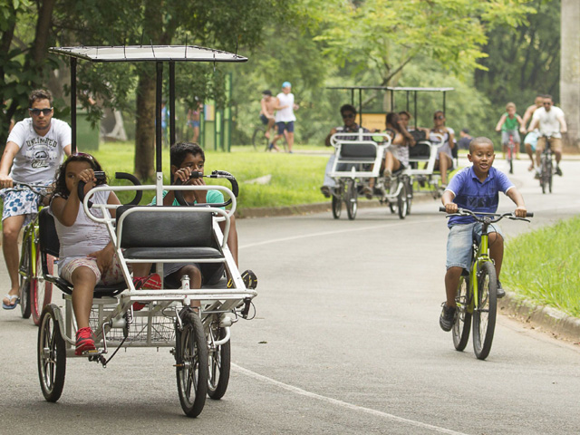
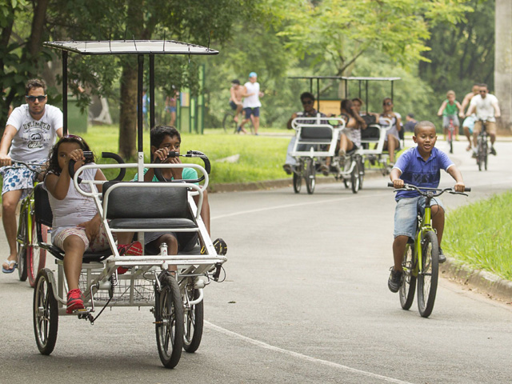

O que fazemos
Desenvolvemos programas e projetos de acordo com as características e necessidades dos nossos clientes e parceiros. Conheça os principais produtos e serviços do Instituto 5 Elementos:
Ações Ecopedagógicas
Desenhamos ações para promover conceitos e práticas educativas de sustentabilidade por meio de brincadeiras, vivências, exposições, experiências, exibição de áudio visuais e rodas de conversas. Nossas atividades podem acontecer em qualquer espaço com o propósito de encantar de forma divertida e criativa públicos de todas as idades.
Nas ações são oferecidas as seguintes práticas: plantio de várias espécies de plantas alimentícias em diferentes espaços, como separar seus resíduos corretamente para a coleta seletiva, instalação de cisterna para captar de água de chuva, como fazer uma composteira com e sem minhoca, como construir a partir dos princípios da bioconstrução, litros de luz e forno solar que valorizam a captação da energia do sol, valorização biodiversidade das florestas, sementes e espécies da fauna e flora de cada bioma brasileiro, conectando esses conteúdos com jogos temáticos, música, arte e cultura.
Articulação e Mobilização
Nossa equipe desenvolve o planejamento participativo articulando e mobilizando empresas, governo e sociedade civil para promover projetos e programas de desenvolvimento sustentável local.
É importante destacar que nesse processo é realizado um levantamento das ações pré-existentes de cada um dos 17 ODS – Objetivos do Desenvolvimento Sustentável de todos os parceiros envolvidos, visando potencializar conexões para fortalecer e ampliar os resultados, ou iniciar projetos conforme demandas da realidade local.
Curadoria de Conteúdos
Atuamos na elaboração de pesquisas e curadoria de conteúdos para materiais educativos, publicações, produções audiovisuais e sites. Com 27 anos de experiência na área de educação para a sustentabilidade.
Ecoeficiência
Promover os 5Rs – Repensar, Recusar, Reduzir, Reutilizar e Reciclar os recursos naturais em eventos, empresas, escolas é o foco desse serviço de gestão socioambiental.
Para planejar quaisquer ações promovendo os 5Rs é necessário repensar e planejar três momentos: no ato do consumo de matérias primas, materiais, alimentos, energia, verificando procedência e formas de descarte e tratamento, no descarte correto beneficiando quando possível cooperativas de catadores, e no tratamento adequado de tudo que foi utilizado.Esta é uma prática integrada a economia circular, que é um conceito econômico que faz parte do desenvolvimento sustentável, inspirado em noções de economia verde que emerge como alternativa à economia linear.
Formação em Educação para a Sustentabilidade
Oferecemos cursos e oficinas na área de Educação para a Sustentabilidade para professores, lideranças comunitárias, funcionários de empresas e interessados em geral, visando sensibilizar os envolvidos para promover a mudança de comportamento pessoal e assim protagonizar ações e projetos em suas comunidades com foco no desenvolvimento da cultura da sustentabilidade
Temos como valores da educação para a sustentabilidade o cuidar das pessoas, o cuidar da Terra e o repartir os excedentes, ou seja, acreditamos que esses são os pilares para a construção de uma sociedade democrática, justa e sustentável.
Os principais conteúdos dessa formação abrangem os seguintes temas: Mudanças Climáticas, 17 Objetivos do Desenvolvimento Sustentável, Carta da Terra, Pegada Ecológica, A história das coisas, Metodologia da Flor da cultura da sustentabilidade, Elaboração de projetos, Água, Espécies e Ecossistemas, Energia e Tecnologia, Economia Local, Segurança Alimentar e Interação Humana. Clique aqui para saber mais.
Nossa História
O Instituto 5 Elementos – Educação para a Sustentabilidade é uma organização sem fins lucrativos (OSCIP) fundada por mulheres em 7 de abril de 1993, em São Paulo. O objetivo era implementar ações práticas e educativas sobre sustentabilidade, desde os primeiros projetos voltados a escolas e comunidades.
Nos seus 30 anos de trajetória, o Instituto consolidou-se como referência na área, com programas educativos, publicações, jogos, trilhas ambientais e formação de professores focados em educação ambiental . Atua alinhado aos 17 Objetivos de Desenvolvimento Sustentável da Agenda 2030, além de diversas políticas públicas, integrando redes como a “Carta da Terra” e a Rede Paulista de Educação Ambiental (REPEA)
Parceria pela Natureza: 5 Elementos no Parque Villa-Lobos
A 5 Elementos – Instituto de Educação para a Sustentabilidade tem a honra de firmar uma parceria com o Parque Villa-Lobos, um dos maiores e mais emblemáticos espaços verdes da cidade de São Paulo. Juntos, unimos forças para promover a educação ambiental e despertar a consciência ecológica por meio de experiências transformadoras.
Dentro do parque, a 5 Elementos desenvolve atividades educativas voltadas à preservação da natureza e ao entendimento profundo dos cinco elementos naturais – terra, água, fogo, ar e éter. O espaço foi especialmente pensado para receber visitantes de todas as idades que desejam aprender mais sobre sustentabilidade, ecossistemas e o impacto de nossas escolhas no meio ambiente.
O Parque Villa-Lobos, localizado na zona oeste de São Paulo, é um verdadeiro refúgio urbano que oferece lazer, cultura e contato com a natureza. Com mais de 700 mil metros quadrados de área verde, o parque é palco de diversas ações de cidadania, recreação e educação ambiental, sendo essencial para a qualidade de vida da cidade.
A presença da 5 Elementos dentro do parque reforça o compromisso mútuo com a preservação do planeta e a formação de uma sociedade mais consciente e participativa. Convidamos você a visitar nosso espaço, vivenciar as oficinas e atividades interativas, e fazer parte dessa jornada de reconexão com os elementos da natureza.
 

Centro de Educação Ambiental no Parque Villa‑Lobos
Em abril de 2006, o Instituto inaugurou o Centro de Educação Ambiental (CEA) no Parque Villa‑Lobos, em São Paulo. O projeto inclui o Programa de Visitas Monitoradas, ideal para escolas e famílias aprenderem sobre ecossistemas, água e biodiversidade, e um Programa de Voluntariado Ecológico, envolvendo cerca de 100 voluntários por ano
- Trilhas monitoradas
- Observação de fauna
- Atividades de jardinagem
- Rodas de conversa sobre meio ambiente
- Construção de terrários
- Mutirões de plantio
- Visitas monitoradas para escolas e famílias
- Atividades educativas com jogos e materiais lúdicos
- Biblioteca com acervo ambiental
- Programas de voluntariado ecológico
Atividades do CEAPAM
Além disso, conecta-se com o público por meio de um acervo educativo completo (livros, vídeos e jogos ambientais), com destaque para atividades de jardinagem, trilhas, observação da fauna, terrários, mutirões de plantio e rodas de conversa. Este projeto contou com apoio institucional do Instituto Unibanco e da Secretaria Estadual do Meio Ambiente de SP.